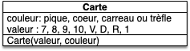

Projet : objets cartes
Encore un projet d'initiation dans le codage des objets. On s'intéresse ici aux méthodes spéciales qui permettent d'utiliser les objets comme des nombres.
Vous allez coder une classe Carte, ce qui permettra par la suite de jouer à la bataille. La classe carte en elle-même ne fera pas grand chose, mais elle illustrera la notion de value object :
Définition
Un value object est un objet ne pouvant pas être modifié une fois créé : il ne possède aucune méthode lui permettant de changer ses attributs qu'il faut renseigner à sa création.
Projet
Vscode
Créez un dossier projet-cartes sur votre ordinateur et ouvrez leu avec visual studio code pour un faire votre projet.
Programme principal & User stories
Le but du projet est de pouvoir jouer à une variante de la bataille :
But
On veut pouvoir mélanger un jeu de 32 cartes (sans joker) puis le séparer en 2 pioches de 16 cartes, un tas par joueur.
A chaque tour les deux joueurs prennent la première carte de leur pioche et la révèle. Le joueur ayant la plus grande carte (7 < 8 < 9 < 10 < V < D < R < 1 et si égalité de rang alors : ♠ > ♥ > ♦ > ♣︎) prend les deux cartes et les place dans sa pile de défausse (initialement vide).
Lorsqu'un joueur doit prendre une carte alors que sa pioche est vide, il mélange les cartes de sa défausse qui forment une nouvelle pioche. Si la pioche et la défausse sont vides, le joueur perd la partie.
Carte UML
La pioche et la défausse pouvant être facilement modélisées par des listes, il nous reste à créer une classe Carte pour avoir tous les éléments de base de notre projet.
Proposez une modélisation UML d'une classe Carte pour notre projet.
solution
solution
On a besoin que d'un constructeur :

User stories
Le projet nécessite de faire plein de choses. Pour vous aider à réaliser ce but, on va se placer des objectifs intermédiaires, sous la forme de user stories.
Je vous en propose une ci-après qui exhibe la capacité à créer un jeu de 32 cartes et à afficher les cartes à l'écran :
User Story
- Nom : "Voyance"
- Utilisateur : un voyant extralucide.
- Story : On veut pouvoir tirer les cartes
- Actions :
- créer un paquet de 32 cartes (sans joker)
- prendre au hasard 3 cartes du paquet
- afficher à l'écran les trois cartes, dans l'ordre où elles ont été tirées
Par rapport au jeu, il manque essentiellement la fonctionnalité permettant d'ordonner les cartes :
Créez une user story nommée "Ordonnancement" qui exhibe la fonctionnalité de pouvoir ordonner les cartes.
En affichant 10 cartes tirées avec remise dans l'ordre où elles ont été tirées, puis dans l'ordre croisant.
corrigé
corrigé
- Nom : "Ordonnancement"
- Utilisateur : un adepte de réussite
- Story : On veut pouvoir ranger les cartes par ordre croissant
- Actions :
- choisir 10 cartes au hasard (on peut avoir les mêmes cartes)
- afficher à l'écran les 10 cartes, dans l'ordre où elles ont été tirées
- afficher à l'écran les 10 cartes, dans l'ordre croissant
Créons les fichiers pour nos users stories, même si le code n'est pas encore clair. Par exemple pour la user story "voyance", on crée un fichier story_voyance.py contenant :
# création d'un paquet de 32 cartes
# prendre au hasard 3 cartes du paquet
# afficher à l'écran les trois cartes, dans l'ordre où elles ont été tiréesOn ajoutera petit à petit le code permettant d'implémenter la story, au fur et à mesure de l'avancement du projet.
Créez les deux fichiers de story.
Code
Créez les fichiers qui nous permettront de coder la carte :
carte.pytest_carte.py
Constructeur
Le constructeur d'une carte nécessite 2 paramètres : la valeur et la couleur.
En considérant que les deux paramètres couleur et valeur sont des entiers quelles sont les possibilités admissibles pour construire une carte ?
corrigé
corrigé
Par exemple, pour les valeurs :
- 7 pour
"sept" - 8 pour
"huit" - 9 pour
"neuf" - 10 pour
"dix" - 11 pour
"valet" - 12 pour
"dame" - 13 pour
"roi" - 14 pour
"as"
Pour les couleurs :
- 1 pour
"pique" - 2 pour
"cœur" - 3 pour
"carreau" - 4 pour
"trèfle"
Implémentez le constructeur de la classe Carte et ses tests en supposant que l'utilisateur entre les bonnes valeurs de paramètres.
Comparaisons
Le principal intérêt d'utiliser des entiers pour coder nos valeurs et nos couleurs est qu'il sera facile de comparer deux cartes.
Codez des users stories permettant de comparer des cartes entres-elles :
- savoir si deux cartes sont égales
- savoir si deux cartes sont différentes
- savoir si une carte est strictement plus petite qu'une autre
- savoir si une carte est plus petite ou égale à une autre
Affichage à l'écran
En revanche afficher une carte à l'écran uniquement avec ses attributs entiers n'est pas très parlant. Codons une méthode permettant un affichage à l'écran plus convivial :
Codez une méthode texte d'une carte qui rend une chaîne de caractères. Le code suivant doit pouvoir fonctionner (en supposant que l'entier 13 correspond à l'as et l'entier 1 à pique) :
>>> from carte import Carte
>>> ace_pique = Carte(13, 1)
>>> print(ace_pique.texte())
as de piqueFaites un test de cette méthode en testant la représentation sous la forme d'une chaîne de caractères d'une Carte.
User story
Vous avez assez de matière pour coder notre seconde user story :
Codez la user story "Ordonnancement".
Constantes de classes
Avant de pouvoir finir la partie de création d'une carte, il nous reste un problème à résoudre. Comment indiquer à l'utilisateur les possibilités de valeur et de couleurs et leurs correspondances ?
La solution communément utilisée pour cela est de créer des constantes :
Créez les constantes :
SEPT,HUIT,NEUF,DIX,VALET,DAME,ROI,ASPIQUE,COEUR,CARREAU,TREFLE
En leur associant les chaînes de caractères adéquates.
Il ne faudra qu'utiliser ces constantes pour créer les cartes et ne plus directement utiliser des entiers comme 7.
Par exemple, on écrira Carte(carte.AS, carte.TREFLE) plutôt que Carte(13, 4)
Utilisez dans le code et les tests les constantes à la place des chaînes de caractères.
Vous n'êtes pas obligé d'importer toutes les constantes, une à une. En utilisant juste import carte, vous pourrez utiliser carte.PIQUE (constante PIQUE dans l'espace de nom de carte) directement par exemple.
Enfin, pour grouper ces constantes, vous pourrez :
Créer deux autres constantes, qui rassemblent les couleurs et les valeurs entre elles :
VALEURS = [SEPT, HUIT, NEUF, DIX, VALET, DAME, ROI, AS]COULEURS = [TREFLE, CARREAU, COEUR, PIQUE]
Remarquez que l'on a rangé les différentes valeurs par ordre croissant de valeur et de couleur.
Connaître cette technique est fondamentale. L'utilisateur ne doit pas être au courant des entiers codant vos valeurs et couleurs : Il utilise des constantes explicites. Ceci permet de plus de garantir que les entrées du constructeur de la cartes sont toujours correctes.
C'est une application directe du mantra NO MAGIC NUMBERS :
Coding mantra
User story voyance
Vous avez tous les outils nécessaires pour créer les user story "voyance" :
Codez la user story "voyance".
Vous pourrez utiliser la fonction random.sample pour tirer des cartes sans remise d'un paquet.
Jeu
Vous pouvez maintenant finir le projet en codant le jeu !
La règle du jeu est :
- mélangez un jeu de 32 cartes en deux pioches de 16 cartes, une pour chaque joueur
- chaque joueur dispose également d'une défausse, initialement vide
- N = 1
- chaque joueur dévoile la carte du dessus de leur pioche
- le joueur ayant la carte la plus élevée remporte la carte de l'adversaire et pose les deux cartes (la sienne et celle de son adversaire) dans sa défausse
- si un joueur n'a plus de cartes dans sa pioche, il mélange les cartes de sa défausse pour en faire un nouvelle pioche
- si un joueur n'a plus de carte dans sa pioche, il perd la partie
- N = N + 1
- si N est inférieur ou au nombre maximum de tour, retour en 4, sinon le jeu s'arrête.
Codez le jeu dans un fichier main.py